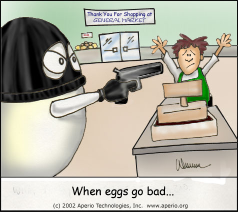

Relevance Evaluation

Methodology
- Data for GeRe - non-contextual transitive relevance combined
by Euclidean distance
- 441 problems with excess axioms
- χ2 test for independance of relevance measure and use
Results
-
| Reject independence with confidence
|
| 90-97.5%
| 99%
| 99.9%
|
| 30
| 19
| 363
|
- All 49 with "low" confidence have 16 or less axioms, and
reletively few unnecessary axioms
- It's hard to identify a few bad eggs